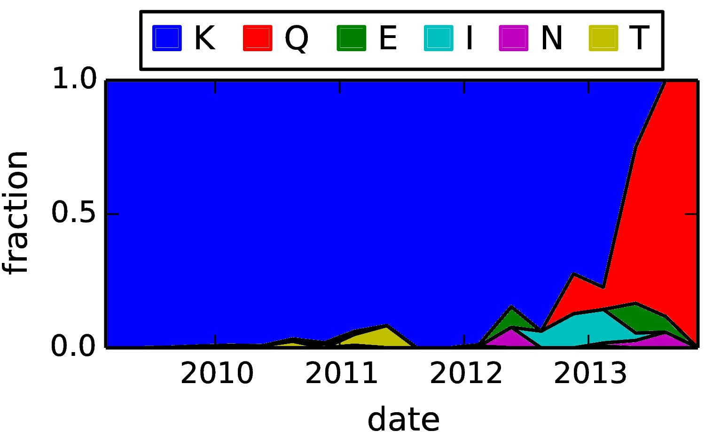
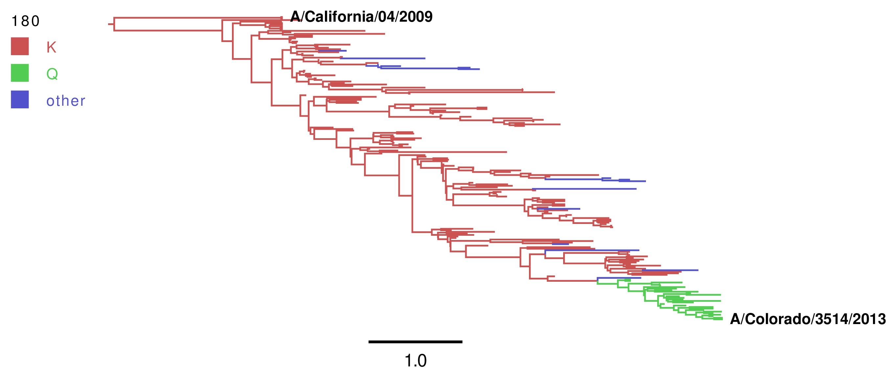

Analysis of mutations at site 166 (H3 numbering, see HA numbering below) of the HA from human pandemic H1N1.
The input files, analysis scripts, and results can be downloaded on GitHub.
This analysis was performed by Jesse Bloom.
Contents
The occurrence of different amino-acid identities at HA residue 166 (H3 numbering) was analyzed by downloading all full-length human pandemic H1N1 sequences present in the Influenza Virus Resource [Bao2008] as of Feb-23-2014. After purging sequences that were less than full length, contained ambiguous nucleotide identities, lacked full (year, month, day) isolation dates, or were otherwise anomalous, the sequences were aligned. Each calendar year was broken into four equal partitions beginning with January 1, the frequencies of different amino acids at residue 166 for each partition was calculated and plotted. For construction of phylogenetic trees, the sequence set was randomly subsampled to 10 sequences per quarter-year partition. BEAST [Drummond2013] was then used to sample from the posterior distribution of phylogenetic trees with reconstructed sequences at the nodes, after date stamping the sequences, using a JTT [Jones1992] with a single rate category with an exponential prior, a strict molecular clock, and relatively uninformative coalescent-based prior over the tree. The figure shows a maximum clade credibility summary of the posterior distribution with branches colored according to the reconstructed amino-acid identity with the highest posterior probability at their descendent nodes. The tree was visually rendered using FigTree. The input data and computer code used for this analysis can be found on GitHub at https://github.com/jbloom/pdmH1N1_HA_K166_mutations.
Various numbering schemes are in use for influenza HA (see HA_numbering). The site examined here is:
Here are the input sequence data files. All other files are analysis scripts or output files that form part of the Analysis described below. Here are the input files:
Here are the steps in the analysis:
The first step is performed by the Python script parseseqs.py, and can be run with:
python parseseqs.py
The steps are:
Align the sequences. All sequences in HAseqs.fasta are pairwise aligned with the reference sequence in California2009-HA.fasta after:
- Purging any sequences with ambiguous nucleotides, and any sequences that are specified as anomalies in AnomalousSequences.txt.
- Purging any sequences that do not exactly match the reference sequence in length.
- Purging any sequences that do not have a full date specified (year, month, and day).
The resulting aligned and translated protein sequences are written to the created file all_alignedproteins.fasta.
Get a subset of sequences for building the phylogenetic tree. Each year is broken into four partitions spanning months 1-3, 4-6, 7-9, and 10-12. For each partition, up to 10 sequences per year are randomly selected to be retained. These sequences are written to selected_alignedproteins.fasta. The reason for only keeping a subset of the sequence in this way is to have a sequence set small enough to build a phylogenetic tree without undue computational burden.
Count the occurrences of different amino-acid identities at site 166 (H3 numbering, see HA numbering) for each of the date partitions. The results are written to the file partitioncounts.txt. Here is the raw data in that file:
#Counts of different amino acids in each date partiton. #date start end nseqs A C D E F G H I K L M N P Q R S T V W Y 2009.12 2009.00 2009.25 8 0 0 0 0 0 0 0 0 8 0 0 0 0 0 0 0 0 0 0 0 2009.38 2009.25 2009.50 1707 0 0 0 1 0 0 0 0 1706 0 0 0 0 0 0 0 0 0 0 0 2009.62 2009.50 2009.75 1929 0 0 0 4 0 0 0 0 1925 0 0 0 0 0 0 0 0 0 0 0 2009.88 2009.75 2010.00 1885 0 0 0 0 0 0 0 2 1872 0 0 10 0 0 1 0 0 0 0 0 2010.12 2010.00 2010.25 399 0 0 0 0 0 0 0 0 395 0 0 2 0 2 0 0 0 0 0 0 2010.38 2010.25 2010.50 125 0 0 0 0 0 0 0 0 124 0 0 0 0 0 0 0 1 0 0 0 2010.62 2010.50 2010.75 241 0 0 0 1 0 0 0 0 233 0 0 0 0 1 0 0 6 0 0 0 2010.88 2010.75 2011.00 209 0 0 0 0 0 0 0 1 205 0 0 3 0 0 0 0 0 0 0 0 2011.12 2011.00 2011.25 437 0 0 0 0 0 0 0 2 410 0 0 2 0 1 3 1 18 0 0 0 2011.38 2011.25 2011.50 48 0 0 0 0 0 0 0 0 44 0 0 0 0 0 0 0 4 0 0 0 2011.62 2011.50 2011.75 26 0 0 0 0 0 0 0 0 26 0 0 0 0 0 0 0 0 0 0 0 2011.88 2011.75 2012.00 17 0 0 0 0 0 0 0 0 17 0 0 0 0 0 0 0 0 0 0 0 2012.12 2012.00 2012.25 171 0 0 0 1 0 0 0 0 169 0 0 0 0 0 1 0 0 0 0 0 2012.38 2012.25 2012.50 26 0 0 0 2 0 0 0 0 22 0 0 2 0 0 0 0 0 0 0 0 2012.62 2012.50 2012.75 16 0 0 0 0 0 0 0 1 15 0 0 0 0 0 0 0 0 0 0 0 2012.88 2012.75 2013.00 47 0 0 0 0 0 0 0 6 34 0 0 0 0 7 0 0 0 0 0 0 2013.12 2013.00 2013.25 327 0 0 0 0 0 0 0 41 253 0 0 4 0 27 0 0 2 0 0 0 2013.38 2013.25 2013.50 36 0 0 0 4 0 0 0 1 9 0 0 1 0 21 0 0 0 0 0 0 2013.62 2013.50 2013.75 17 0 0 0 1 0 0 0 0 0 0 0 1 0 15 0 0 0 0 0 0 2013.88 2013.75 2014.00 43 0 0 0 0 0 0 0 0 0 0 0 0 0 43 0 0 0 0 0 0
The Python script makeplot.py is used to make a PDF plot (with matplotlib) showing the frequencies of different amino acids at site 166 as a function of time. Run the script with:
python makeplot.py
The resulting plot divides each year into four partitions (months 1-3, 4-6, 7-9, 10-12) as in partitioncounts.txt. The frequencies of different amino acids at site 166 is then shown for each of these partitions.
The created plot is aafracs.pdf. A JPG version (lower quality, created with ImageMagick convert from the PDF) is also created as aafracs.jpg. Here is that plot:
The plot aafracs.jpg showing the frequencies of different amino acids at site 166. A higher quality image of this same plot is in aafracs.pdf.
This plot is a graphical display of the data in partitioncounts.txt.
A phylogenetic tree was constructed using the subset of sequences in selected_alignedproteins.fasta. This subset only contains 10 sequences per year partition (4 partitions per year) -- the reason for only using some sequences is to make the phylogenetic tree construction tractable.
First, the beauti program of the BEAST package was used to construct an input XML file from selected_alignedproteins.fasta. The tips were stamped with their isolation dates, a JTT substitution model with a single rate category, and a strict molecular clock was assumed. The tree prior was a relatively uninformative coalescent-based prior and an exponential prior was used over the rate. Ancestral states were reconstructed at all nodes. The MCMC was run for 10 million steps. Full details are available in the created XML file selected_alignedproteins.xml.
BEAST was then run using BEAGLE with the command:
~/BEASTv1.8.0/bin/beast -overwrite -beagle_SSE -seed 1 -threads 3 selected_alignedproteins.xml java -classpath ~/BEASTv1.8.0/lib/beast.jar dr.app.beast.BeastMain -threads 6 -overwrite -beagle_SSE selected_alignedproteins.xml
This created the following files:
selected_alignedproteins.log selected_alignedproteins.trees
The key data is in the latter file (selected_alignedproteins.trees); however, this file is very large and so is not included in this repository on on GitHub (it can be regenerated using the commands above).
Tracer was used to analyze the selected_alignedproteins.log file to check for MCMC convergence. If the first 10% of steps (first 1 million steps) are excluded, the remaining 90% (9 million steps) appear to be well converged, and have good effective sample sizes. These results indicate that the MCMC was probably run for a sufficiently large number of steps.
An annotated tree was then constructed using logcombiner and treeannotator from the BEAST package. This tree is created automatically by the Python script analyze_tree.py with the command:
python analyze_tree.py
This script creates several output files not included in the package on GitHub (again, they can be regenerated) -- the script also contains hardcoded paths to BEAST executables that you may need to modify for your computer. The result of this script that is retained is the file annotated_maxcredtrees.trees.
The annotated_maxcredtrees.trees file was then opened with FigTree and manually re-formatted for appealing visual appearance. The formatted image was saved as annotated_maxcredtree.pdf. A JPG version of this file (annotated_maxcredtree.jpg) was then created with ImageMagick convert using:
convert -density 300 annotated_maxcredtree.pdf annotated_maxcredtree.jpg
Here is that plot:
The plot annotated_maxcredtree.jpg showing the frequencies of different amino acids at site 166. A higher quality image of this same plot is in annotated_maxcredtree.pdf. In this plot, the residue is labeled as 180 since BEAST uses consecutive numbering rather than the H3 numbering scheme.
| [Drummond2013] | Drummond AJ, Suchard MA, Xie D, and Rambaut A. Bayesian phylogenetics with BEAUti and BEAST 1.7. Mol Biol Evol. 29:1969-1973 (2012) |
| [Bao2008] | Bao Y, Dernovoy D, Kiryutin B, Zaslavsky L, Tatusova T, Ostell J, and Lipman D. The influenza virus resource at the National Centery for Biotechnology Information. J Virol. 82:596-601 (2008). |
| [Jones1992] | Jones DT, Taylor WR, and Thornton JM. The rapid generation of mutation data matrices from protein sequences. Comput Appl Biosci. 8:275-282 (1992) |